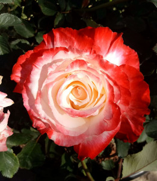
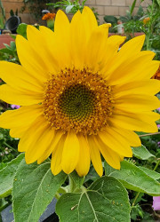

Flowers

Flowers make an excellent addition to any garden. Many people see them as plants used for just looks but
there is more to them than that. Just like fruits and vegetables, flowers also have their uses, many of which might surprise you.
The amount of variety available means that there is something for everyone so anyone can enjoy having flowers in their garden.
Uses of Flowers

While most people see flowers as purely decorative, many have plenty of uses that make them very useful in the garden.
While a decorative flower vase is a common use for flowers, they can range from bring edible to even having
Marigolds for example can be planted among crops such as lettuce since they emit a smell that deters pests.
Flowers are also a great way to attract pollinators to your garden which then helps out your other plants in your garden.